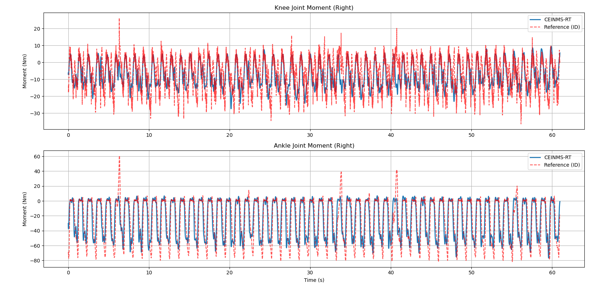

CEINMS-RT 参数校准算法复现与验证
1. 校准算法理论
在完成上一节的 CEINMS-RT 正向动力学推演后，发现使用 OpenSim 默认肌肉参数（ gait2392 通用模型）直接驱动当前受试者的步态数据时，预测的关节力矩在幅值上与逆动力学（Inverse Dynamics, ID）参考值存在一定偏差。
我想进一步复现校准算法看看是否能降低误差，而且原论文 Section III.B (CEINMS-RT Calibration) 明确指出，EMG 驱动模型必须经过个性化校准，以适应不同受试者的解剖结构差异和肌肉力量生成能力。
- 优化目标：最小化 CEINMS-RT 估计的关节力矩与参考力矩（通过 ID 计算获得）之间的均方根误差（RMSE）。
- 优化变量：原论文包括了肌肉力量系数（Strength coefficient \(\gamma\)）、最佳肌纤维长度（\(l_{opt}^m\)）、肌腱松弛长度（\(l_{slack}^t\)）以及非线性激活形状因子（\(A\)）。
- 优化算法：原论文采用模拟退火算法进行全局寻优，以跳出局部极小值。
在本节校准算法复现中，为了验证算法架构的可行性，我优先针对核心变量——肌肉力量系数 \(\gamma\)（即对 \(F_{max}\) 进行缩放）展开了全局优化实验，缩放边界设定为论文中建议的 [0.5, 2.0]（即 0.5 ≤ \(\gamma\) ≤ 2.0）。
2. 算法设计与工程优化
在 Python 环境下进行成百上千次的模型迭代寻优，如果每次迭代都调用 OpenSim 接口读取运动学状态，耗时将是灾难性的。为此，在 calibration_raw.py 中，我进行了以下关键的工程化设计：
2.1 运动学预计算机制
在优化器启动前，先遍历一次实验数据，将所有参与校准的肌肉（如腓肠肌、比目鱼肌、胫骨前肌等 10 块下肢关键肌肉）在整个时间序列上的肌肉肌腱总长度 (\(l_{mtu}\)) 和 关于髋/膝/踝的瞬时力臂 (\(r\)) 提取并存入内存字典 kinematics 中。
在随后的优化迭代（loss_function）中，彻底剥离了 OpenSim 依赖，纯粹进行矩阵运算与物理求解，将单次迭代的耗时从秒级压缩至毫秒级。
2.2 目标函数构建
构建了计算预测力矩与参考力矩残差的 Loss 函数。为保证多自由度的综合精度，目标函数定义为膝关节与踝关节 RMSE 的总和： $$ Loss = RMSE_{knee} + RMSE_{ankle} $$
注：代码中增加了相关系数检测，自动校正 OpenSim 与本地物理引擎间可能存在的坐标系符号反转问题。
2.3 双引擎求解器集成
为了兼顾日常调试速度与最终结果精度，脚本集成了两种优化器：
1. L-BFGS-B：基于梯度的拟牛顿法，收敛极快，适合跑通管线和代码 Debug。
2. Simulated Annealing (模拟退火)：采用 scipy.optimize.dual_annealing。完美对齐了原论文的方法，能够有效克服肌肉冗余带来的非凸优化（Non-convex optimization）陷阱，寻找全局最优解。
3. 核心代码解析
展示校准器中最为核心的目标函数计算与优化器调用逻辑。通过封装 OptimizationTracker，我们还实现了实时的终端 Loss 下降监控。
# 提取自 calibration_raw.py: 目标函数定义
def loss_function(self, scale_factors):
"""
目标函数：传入当前的肌力缩放系数向量，返回总的力矩预测误差
"""
# 根据当前 scale_factors 前向推演力矩
pred_knee, pred_ankle = self.predict_moments(scale_factors)
# 截取有效长度并与逆动力学参考值对齐
n = min(len(pred_knee), len(self.id_df))
ref_knee = self.id_df['knee_angle_r_moment'].values[:n]
ref_ankle = self.id_df['ankle_angle_r_moment'].values[:n]
# 计算各个关节的 RMSE
rmse_knee = np.sqrt(mean_squared_error(ref_knee, pred_knee[:n]))
rmse_ankle = np.sqrt(mean_squared_error(ref_ankle, pred_ankle[:n]))
# 汇总为总 Loss
total_loss = rmse_knee + rmse_ankle
# 更新进度
if self.tracker:
self.tracker.update(total_loss)
return total_loss
# 提取自 calibration_raw.py: 优化器配置
if OPTIMIZER == 'SimulatedAnnealing':
# 采用 SciPy 的 dual_annealing 实现模拟退火全局优化
result = dual_annealing(
func=self.loss_function,
bounds=bounds, # 缩放边界: [0.5, 2.0]
maxiter=MAX_ITERATIONS, # 论文中提到校准耗时较长，控制最大迭代
initial_temp=5230.0, # 初始退火温度
visit=2.62,
accept=-5.0
)
4. 初步校准结果
运行 calibration_raw.py 后，程序不仅将求解出的个性化参数（f_max, scale_factor 等）保存为 calibrated_muscle_params.json，供前向预测脚本 run_ceinms_raw.py 加载使用，还输出了校准前后的量化对比。
终端打印如下：
CEINMS-RT Calibration
[info] Loaded model 3DGaitModel2392 from file gait2392.osim
Precomputing kinematics...
Starting calibration using SimulatedAnnealing...
Calibrating (SimulatedAnnealing): 2276iter [2:26:44, 3.87s/iter, Loss=37.6934, Best=27.3429, Time=8804.1s]
Running final validation...
VALIDATION RESULTS
Metric | Knee (Original) | Knee (Calibrated)
RMSE (Nm) | 13.3076 | 8.2704
R² | 0.2646 | 0.3056
Metric | Ankle (Original) | Ankle (Calibrated)
RMSE (Nm) | 24.8725 | 19.0725
R² | 0.5919 | 0.5934
5. 分析
仅通过对 10 块主要肌肉的 \(F_{max}\) 进行全局比例缩放（力量系数校准），系统预测的关节力矩误差（RMSE）就产生了明显下降：
- 右膝关节：归一化的均方误差从 0.1774 Nm/kg 降至 0.1104 Nm/kg
- 右踝关节：归一化的均方误差从 0.3316 Nm/kg 降至 0.2543 Nm/kg
\(R^2\) 也有所提高，这充分验证了 CEINMS-RT 论文中强调的“Subject-specific calibration”对于真实力矩估计的绝对必要性。
但是存在问题：
-
我当前只对力量系数校准了，但是整个脚本运行的时间为2小时26分44秒，甚至超出了原文中的参考校准时长（20分钟~120分钟）
-
校准脚本中输出的误差分析看上去很好，但是我将校准生成的
json参数文件应用的上节的脚本中计算发现：

力矩可视化之后发现看上去波动变大了，并且仍然存在个别异常值。
6. 下一步计划
- 本次复现主要实现了肌肉强度（\(\gamma\)）的优化。但在真实生理学中，受试者的最佳肌纤维长度 (\(l_{opt}\)) 和 肌腱松弛长度 (\(l_{slack}\)) 对肌肉力矩的非线性影响尤为敏感。下一步，我希望把 \(l_{opt}\) (\(\pm 2.5\%\)) 和 \(l_{slack}\) (\(\pm 5\%\)) 加入到优化向量
scale_factors中。 - 优化模拟退火算法：目前的校准的脚本使用的是
scipy.optimize.dual_annealing，这是一个跑在 CPU 上的串行算法。我准备尝试一下把物理引擎变成 PyTorch，实现并行模拟退火 ，利用 GPU 同时跑 10,000 条独立的模拟退火链。效率上会快很多。 - 在阅读原论文 Section V.A 时，作者提到传统的模拟退火算法可能耗时数小时。他们未来的迭代方向是引入“可微物理引擎 (Differentiable physics)”。既然我已经用 Python 重写了整个 MTU 物理模块（如果能实现GPU加速就更好了），接下来完全可以利用自动微分（Auto-diff）技术，将原本无梯度的退火优化替换为极速的随机梯度下降（SGD）。